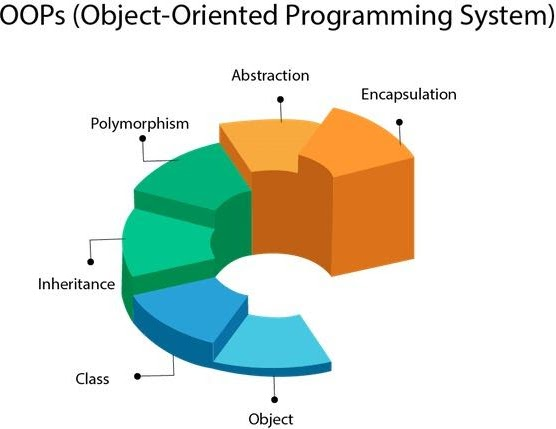

Object Oriented Programming
- Prepared by: 1: Jadav Adarsh(B025)
2: vinit soni(B90)
3: Chosaliya Dhruv(B14)
Introduction
Object-oriented programming (OOP) is a programming paradigm based on the concept of objects, which can contain data and code: data in the form of fields, often known as attributes or properties, and code in the form of procedures, often known as methods. OOP languages are diverse, but the most popular ones are class-based, meaning that objects are instances of classes, which typically also determine their type.
Key Topics & Examples
1) Classes & Objects
Classes are blueprints for creating objects. Objects are instances of classes.
class Dog:
def __init__(self, name, age):
self.name = name
self.age = age
dog = Dog("Buddy", 3)
print(dog.name)2) Encapsulation
Encapsulation involves wrapping the data and code acting on the data together as a single unit. The data is hidden and can only be accessed through public methods.
class Car:
def __init__(self, brand, model):
self.__brand = brand
self.__model = model
def get_car_info(self):
return f"{self.__brand} {self.__model}"
car = Car("Toyota", "Corolla")
print(car.get_car_info())3) Inheritance
Inheritance allows a new class to inherit the characteristics of an existing class.
class Animal:
def __init__(self, name):
self.name = name
def speak(self):
return f"{self.name} makes a sound"
class Dog(Animal):
def speak(self):
return f"{self.name} barks"
dog = Dog("Buddy")
print(dog.speak())4) Polymorphism
Polymorphism allows objects of different classes to be treated as objects of a common super class. The methods used depend on the object’s actual type.
class Shape:
def area(self):
pass
class Circle(Shape):
def __init__(self, radius):
self.radius = radius
def area(self):
return 3.14 * self.radius * self.radius
class Rectangle(Shape):
def __init__(self, length, width):
self.length = length
self.width = width
def area(self):
return self.length * self.width
circle = Circle(5)
rectangle = Rectangle(4, 5)
print(circle.area())
print(rectangle.area())5) Abstraction
Abstraction hides the complex implementation details and shows only the essential features of an object.
from abc import ABC, abstractmethod
class Vehicle(ABC):
@abstractmethod
def move(self):
pass
class Car(Vehicle):
def move(self):
return "Car is moving"
car = Car()
print(car.move())Summary of OOP Concepts
- Encapsulation: Restricting access to some of an object’s components.
- Inheritance: A class can inherit attributes and methods from another class.
- Polymorphism: Different classes can be treated as instances of the same class through inheritance.
- Abstraction: Hiding complex implementation while providing only the necessary functionalities.
Technical & Theoretical Reading Materials
Video Resources
Conclusion
OOP provides a structured approach to programming by modeling real-world entities as objects. By using encapsulation, inheritance, polymorphism, and abstraction, OOP improves code maintainability, reusability, and scalability.